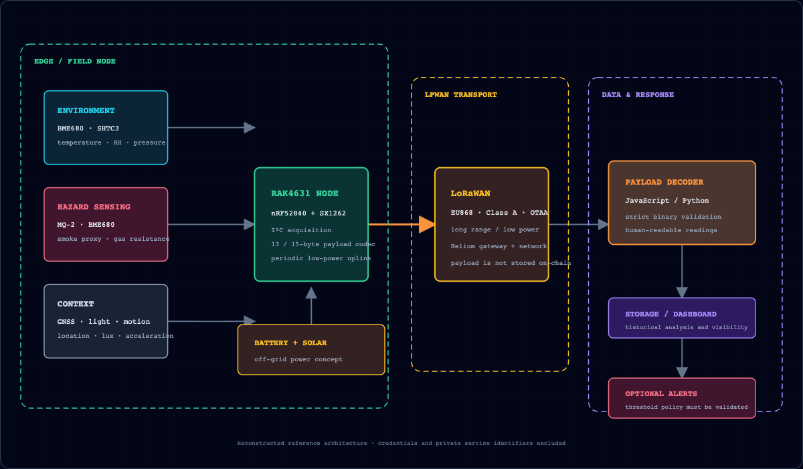
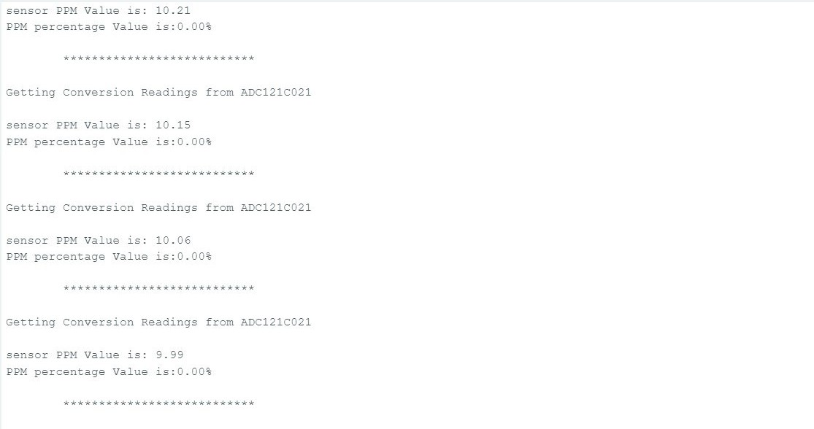
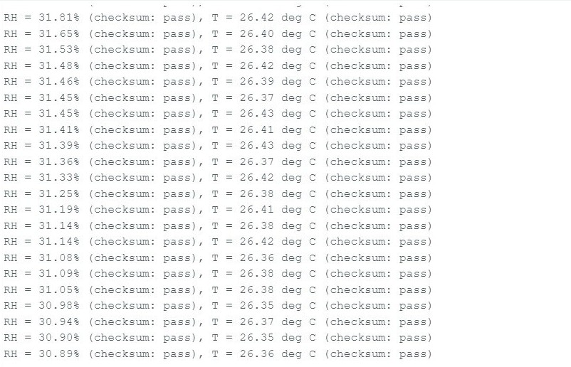

Nature and Facilities Protector
A modular, solar-assisted IoT prototype exploring remote environmental monitoring, LoRaWAN telemetry, and early hazard indication across indoor, urban-outdoor, and forest settings.
Problem and objective
The project investigated whether a low-power modular node could combine environmental and hazard-related sensors with long-range connectivity for places where continuous wired power or conventional internet access may be unavailable. Target scenarios included forests, industrial facilities, petrol or gas stations, and buildings with central heating or gas systems.
The prototype emphasized observation and early indication: collect environmental readings, encode them compactly, transmit them through LoRaWAN, decode them into readable values, store them for analysis, and optionally trigger alerts under an operator-defined policy.
Reference architecture

The Helium network provided LoRaWAN connectivity and blockchain-incentivized coverage. Environmental payloads were transported through the network; the project does not claim they were written to a blockchain.
The historical proof-of-integration continued through a JavaScript decoder, Google Forms/Sheets logging, a Python/Kivy display, and optional threshold-based SMS. Those cloud/UI artifacts are described here but not redistributed because they depended on private service-account configuration, Sheet identifiers, local paths, and personal notification details.
Prototype composition
Edge and power
RAK4631 / RAK4630 WisBlock core, modular baseboard, battery, and solar-assisted charging concept.
Environmental sensors
BME680, SHTC3, LPS22HB, OPT3001, LIS3DH, GNSS, and related modular interfaces.
Hazard indication
MQ-2 smoke/combustible-gas experimentation and an audible/visual local alarm path.
Data pipeline
Big-endian binary payload, LoRaWAN uplink, JavaScript decoding, historical storage/dashboard, and optional messaging integration.
Software reconstruction
The public repository supplies a credential-free reference firmware sketch, a shared C++ payload codec, matching Python and JavaScript decoders, a secret scanner, and hardware-independent tests. The codec preserves both frames found in the student working folder: a 13-byte historical packet and a 15-byte battery extension. Both use an unsigned centi-degree temperature field, so negative readings are rejected rather than wrapped.
| Offset | Bytes | Field | Scale |
|---|---|---|---|
| 0 | 1 | Environment message type | 0x01 |
| 1 | 2 | Temperature | unsigned ÷100 °C |
| 3 | 2 | Relative humidity | ÷100 % |
| 5 | 4 | Pressure | ÷100 hPa |
| 9 | 4 | Gas resistance | Ω |
| 13 | 2 | Optional battery extension | mV |
Recorded evaluation summary
These ranges are observations reported in the 2024 student thesis. They are not independently certified sensor-performance results. The indoor 15% humidity row is dated differently from the surrounding rows and is retained only as an anomalous recorded entry.
| Environment | Temperature | Humidity | Pressure | Gas resistance |
|---|---|---|---|---|
| Indoor | 36.81–38.03 °C | 15–38% | 973.64–976.11 hPa | 99,191 Ω |
| Urban outdoor | 47.87–47.91 °C | 7% | 980.41–980.49 hPa | 3,458,210–3,716,250 Ω |
| Forest | 14.43–14.46 °C | 67% | 1016.72–1016.78 hPa | 190,015–205,712 Ω |
Safe output evidence


Limitations and future work
- The prototype was not certified against fire-alarm, gas-detection, or life-safety standards.
- Sensor thresholds and MQ-2 calibration require gas-specific laboratory validation.
- Recorded values came from limited student tests rather than a controlled long-duration study.
- LoRaWAN availability, latency, and alert delivery are dependent on gateway and backend coverage.
- Power optimization, enclosure/weather resistance, tamper protection, and secure device provisioning require further engineering.
- A production version should use encrypted credential provisioning, authenticated APIs, durable event storage, observability, and validated escalation policies.